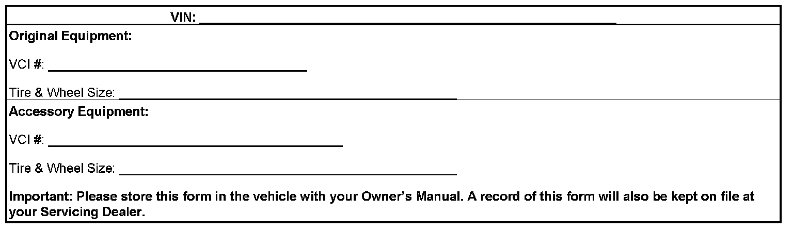

Module Reprogramming
Module ReprogrammingImportant:
The following vehicles with factory 20" wheels/tires do not require any module reprogramming to upsize to 22" wheels/tires:
^ 2008-2009 Chevrolet Avalanche
^ 2008-2009 Chevrolet Suburban
^ 2008-2009 Chevrolet Tahoe
^ 2008-2009 GMC Yukon
^ 2008-2009 GMC Yukon XL
For proper vehicle operation and to ensure coverage under the provisions of the new vehicle warranty, the vehicle must be reprogrammed with the correct calibrations as soon as the accessory wheels are installed.
Contact Techline to obtain a VCI number. Use the Service Programming System (SPS).
Important:
Module reprogramming must be done using Pass-Thru method.
Engine Control Module (ECM)
It will be necessary to reprogram the ECM for speedometer accuracy. Use the following steps:
1. Connect Tech 2(R) to vehicle and to TIS terminal.
2. Power ON the Tech 2(R).
3. Turn ON the ignition, with the engine OFF.
4. Select the proper reprogramming method: "Pass-Thru" and "Reprogram ECU", then "Next".
5. Build the vehicle.
6. Verify VIN is correct, then "Next".
7. Select the proper controller to be programmed: "ECM Engine Control Module".
8. Select the proper programming mode: "VCI", then "Next".
9. Enter the VCI number obtained when calling TCSC, then "OK".
10. On the following Calibration Selection screen, the speedometer calibration has now been added to the calibration set and the box is checked. If a box is not checked, you will have to make the appropriate calibration selection. All boxes must have check marks before going to the next step. Select "Next".
11. Once the reprogramming is complete, depending on the vehicle build you may be required to perform a Crankshaft Position Variation Learn procedure. Refer to the Checking and Clearing DTCs After Reprogramming procedure listed below.
Electronic Brake Control Module (EBCM)
Important:
2007-2009 GMC Yukon Denali and Denali XL upsizing from factory 20" to accessory 22" are excluded from EBCM reprogramming.
1. With the Tech 2(R) still connected, select the proper reprogramming method: "Pass-Thru" and "Reprogram ECU", then "Next".
2. Build the vehicle.
3. Verify VIN is correct, then "Next".
4. Select the proper controller to be programmed: "EBCM Electronic Brake Control Module".
5. Select the proper programming mode: "Normal", then "Next".
6. On the following screen, select the proper calibration "Electronic Brake".
7. From the part numbers displayed, select the one containing the correct wheel size in its description, "Next".
8. On the following screen, select "Done".
Checking and Clearing DTCs After Reprogramming
DTCs codes may be set as a result of the programming process. In most cases the codes can be cleared using the Tech 2(R) and following the procedure listed below.
If required, perform the CKP System Variation Learn Procedure (SI Document ID # 1657049).
1. Install the Tech 2(R) to the vehicle.
2. Turn ignition ON with engine OFF.
3. Enter "Diagnostics" and build vehicle according to model year, vehicle line, etc.
4. Select "Vehicle Control Systems".
5. Select correct engine.
6. Select "Vehicle DTC Information".
7. Select "DTC Display". Scan tool will check all modules for any DTCs that are set.
8. Select "View all DTCs".
9. Select "Clear all DTCs".
10. Press the "exit" key to escape.
Calibration Information Documentation

1. Make a copy of the "Accessory Wheel and Tire Information Form" shown above.
2. Provide all information required on the form.
3. Make a copy of the completed form for the customer to keep in the vehicle along with their Owner's Manual.
4. File the original completed form in the Dealership's Vehicle Service History folder.
Important:
If original equipment tires/wheels are reinstalled, it will be necessary to reset the programming of the PCM to the original specifications.